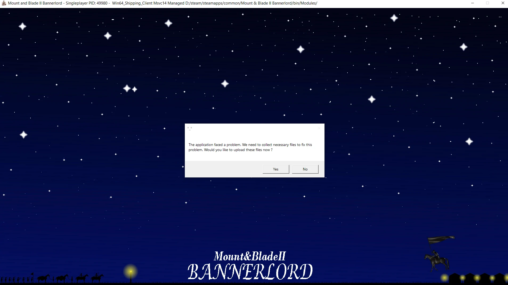
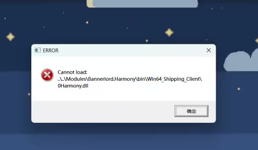

安装教程
准备文件：
在安装前，请确保你要至少有这两组文件：四前置安装文件、星星扩展文件压缩包
安装步骤：
安装前置：本mod需要安装四个前置mod才能运行（简称四前置），如果不知道什么是四前置，请前往中文站前置mod页面
第一步：在下载的压缩包（名为“星星扩展(1.2.7-1.2.8)”）上面右键，点击“解压到 星星扩展(1.2.7-1.2.8)\(E)”（名字不一定是这个，但是方法都一样。），然后打开“星星扩展(1.2.7-1.2.8)”这个文件夹，将里面的XXexpand4(1.2.7-1.2.8)文件夹复制并粘贴到\steam\steamapps\common\Mount&BladeIIBannerlord\Modules这个路径下面。
第二步：进游戏记得勾选XXexpand这个mod。出现特定的加载界面表示安装成功了一半，能创建新存档表示安装成功了80%。在游戏中能看到新模型说明安装成功100%。
常见安装问题
进不去游戏：
如果你启动游戏之后出现这样的报错：
请尝试一下解决方案：
注意：4.0.6版本的星星扩展只适配游戏的1.2.7-1.2.8，使用其他版本玩必定报错。F4.1.0适配1.2.7-1.2.9
①可能是你没安装前置mod造成的：请在中文站搜索“前置”然后按照里面的教程安装前置mod，请注意前置版本、mod版本、游戏版本三者必须保持一致；点击前往中文站前置mod页面
②可能是你前置mod版本不对造成的：按照①里面的方法安装和游戏配套的前置mod；
③加载了其他mod造成的：如果其他mod本身有问题也会导致进不去游戏，请去掉其他mod再次尝试；
④游戏本体问题：如果上面的方法都尝试过了还是进不去，请试试在steam里面验证游戏完整性，或者重新安装游戏。
⑤请记住：不要擅自修改mod的任何文件以及文件名，特别是自己对mod制作一点都不了解的情况下。
进不去游戏：
如果你启动游戏之后出现这样的报错：
请尝试一下解决方案：
这个弹窗是四前置里面的dll没有解锁造成的。请骑砍中文站搜索“dll解锁”，按照里面的步骤对dll进行解锁。
启动游戏时报错弹窗内容为：Game shut down unexpectedly on previous session. Would you like to enable safemode?
请执行以下解决方案：
问你是否以安全模式启动，点否。
简介
此网站暂时专门用于解决以下问题：
骑砍二玩家们在使用星星扩展的一系列问题，包括安装和报错问题。
实时提供mod的最新消息，以供喜爱本mod的朋友们及时获取。
分享作者写的或者将要写的一些mod基础教程以及其他mod制作相关的工具。
使用提示
单击网站内的图片可放大！